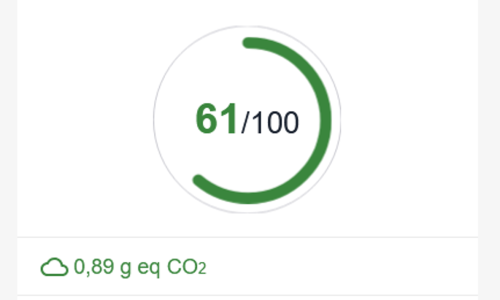
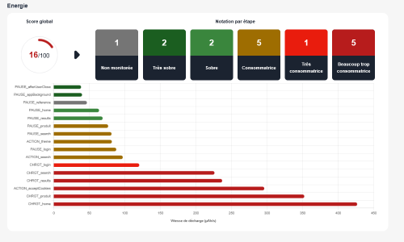
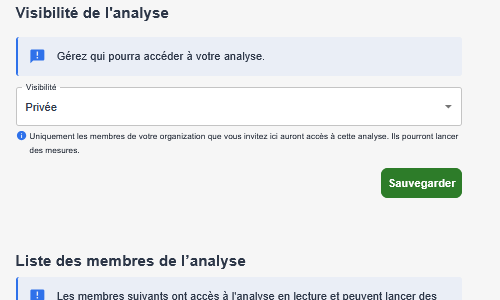

Recognition
Solution recognised for its contribution to protecting the environment.
Greenspector Studio
Measurement indicators, environmental impacts and an ecoscore to guide every decision.
Software ecodesign
Awareness, training, best practices: essential, but not enough. With Greenspector Studio, objectively measure the efficiency of your digital product.
At each step, base your decisions on reliable, complete and objective measurements, as well as rigorous impact assessment.
Add concrete KPIs (carbon impact, ecoscore, performance, data) to your management dashboards.

Project KPIs
Deceptively simple, the Greenspector ecoscore is based on a complete analysis of all user journey steps on three different axes, taking into account whether measured steps are critical or not. The Greenspector ecoscore truly represents your journey's efficiency level.
With Greenspector Studio, obtain a rigorous, precise assessment of carbon impact and other environmental indicators. Learn more about impacts (methodology, indicators…)
Concrete results
Your team is aware of responsible digital practices, trained in ecodesign and applying best practices. Well done!
But beyond the means committed, what about the results? What is the real quality of the product coming out of the digital factory?
With Greenspector Studio, ensure your application meets your expectations.

Collaboration
Each role has its reading level and its indicators.
Through rights management, share your Analyses with colleagues and bring the whole team into a results-driven approach.

Continuous improvement
Run a measurement before each release to avoid anomalies and track indicator trends.
Use APIs to trigger tests from your CI/CD (GitLab CI, Azure CI, Jenkins…). Use other APIs to export results to your own dashboards.
Learn more about continuous integration

What they say
It was important for us to quantify and objectify the concrete impact of the ecodesign efforts we were going to deploy. Thanks to the Greenspector ecoscore, we were able to rationally assess the results of our efforts before and after the project.
Greenspector provides a measurement tool to assess the progressive evolution of best practices implemented and identify adjustments needed for greater efficiency.
Standards
Solution recognised for its contribution to protecting the environment.
Innovations from research presented at international conferences.
LCA (ISO 14040), Green Software Foundation SCI, ADEME RCP and related standards.
References